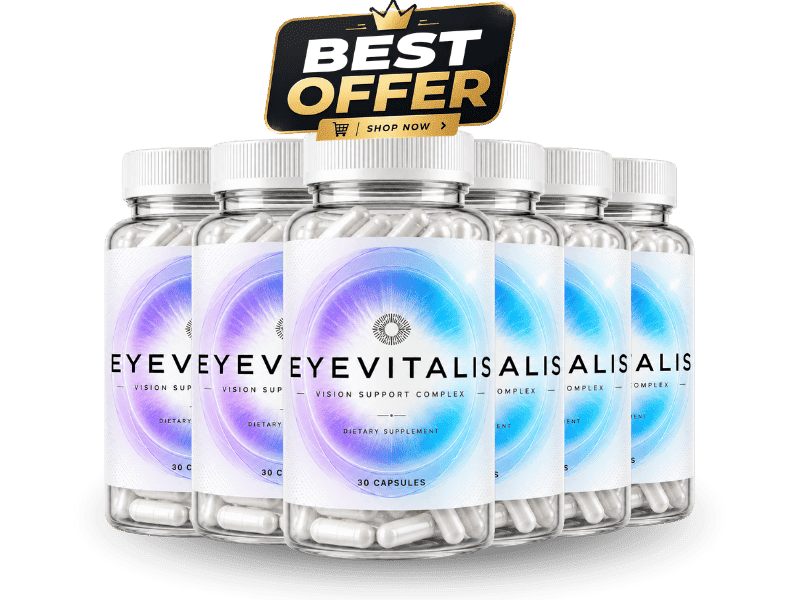

What Is Eyevitalys And How Does It Work?
Every day we battle screen glare, harsh lighting, and age‑related eye fatigue without even noticing. Eyevitalys steps in as a daily nutritional ally, designed to support the microscopic structures that keep vision sharp and comfortable.
The formula targets the oxidative pathways and circulatory channels that feed the retina and ocular muscles, delivering antioxidants and essential nutrients exactly where they’re needed most. Think of it as a micro‑fuel injection for your eyes, helping cells repair and renew naturally.
Eyevitalys is a blend of clinically studied botanicals, vitamins, and minerals that work together to protect against free‑radical damage, improve tear film stability, and support healthy blood flow to the eyes. It’s not a quick‑fix pill; it’s a consistent, science‑backed support system for long‑term visual health.
We set realistic expectations: Eyevitalys can help reduce eye strain, support night‑vision clarity, and maintain overall ocular health, but it won’t magically restore perfect sight overnight. Consistency and a balanced lifestyle are the true keys to lasting results.
Eyevitalys Ingredients
Our formula is built on transparency and purpose—each component was chosen for a specific role in supporting eye health, and every dose is clearly disclosed on the label.
- Lutein (Supports macular health): A powerful carotenoid that concentrates in the retina, lutein filters harmful blue light and combats oxidative stress for clearer, sharper vision.
- Zeaxanthin (Enhances visual acuity): Works hand‑in‑hand with lutein to protect the macula, improve contrast sensitivity, and reduce glare during bright conditions.
- Vitamin A (Beta‑Carotene) (Maintains night vision): Essential for the production of rhodopsin, the pigment that enables low‑light vision, helping you see clearly after sunset.
- Zinc Picolinate (Boosts ocular immunity): A highly absorbable form of zinc that supports enzyme function in the eye, promoting healthy tear production and tissue repair.
- Ginkgo Biloba Extract (Improves blood flow): Naturally enhances microcirculation to the eyes, delivering oxygen and nutrients more efficiently for sustained visual stamina.
- N-Acetyl Cysteine (NAC) (Provides antioxidant protection): A potent antioxidant precursor that replenishes glutathione levels, shielding eye cells from oxidative damage caused by pollutants and screen time.
Together these ingredients create a synergistic shield, delivering comprehensive support without unnecessary fillers, artificial colors, or synthetic binders.
Eyevitalys Side Effects
All ingredients are naturally occurring nutrients that the body already utilizes daily, so the risk of adverse reactions is minimal for most healthy adults.
Eyevitalys is manufactured in a US‑based GMP‑certified facility with rigorous quality controls, third‑party testing, and no known widespread side‑effect reports to date.
Standard disclaimer: As with any dietary supplement, consult a healthcare professional before starting if you have an existing condition or take prescription medication. (DO NOT name specific diseases).
Eyevitalys Dosage
Take one capsule each morning with a full glass of water and a balanced meal that contains healthy fats to aid absorption. Each bottle contains a 30‑day supply.
Fats in your breakfast help the fat‑soluble vitamins and carotenoids dissolve, ensuring your body can fully utilize the nutrients for optimal eye support.
Consistency is key—regular daily use maintains steady nutrient levels, and purchasing multi‑bottle bundles guarantees you never run out while also lowering the per‑bottle cost.
Never exceed the recommended one‑capsule daily dose; more is not better and could increase the chance of mild gastrointestinal upset.
Eyevitalys – Refund Policy
Enjoy a 60‑day, 100% money‑back guarantee from the order date—if you’re not satisfied, you can request a full refund within the window.
This guarantee reflects the manufacturer’s confidence in the product’s quality and effectiveness, removing any risk for first‑time buyers.
For detailed terms and to initiate a return, visit the official Eyevitalys website and follow the simple refund instructions provided in the customer support section.
Eyevitalys Customer Reviews
 John D. (58)
Austin, TX
Verified Purchase – 6 Bottles
John D. (58)
Austin, TX
Verified Purchase – 6 Bottles
"I was skeptical at first, but after a month of taking Eyevitalys I noticed my eyes felt less strained during long workdays. The glare from my computer screen no longer leaves me with a gritty after‑taste. My nighttime driving has become clearer, and I no longer need to squint at street signs. I’m grateful for a supplement that actually supports my vision without any weird side effects."
 Mark S. (60)
Seattle, WA
Verified Purchase – 3 Bottles
Mark S. (60)
Seattle, WA
Verified Purchase – 3 Bottles
"After turning 60 I started noticing my eyes getting tired faster, especially on hikes. Eyevitalys gave me the confidence to keep exploring without constant eye fatigue. The supplement blends smoothly with my breakfast, and within two weeks I felt a noticeable boost in visual clarity. My partner even commented that I seem more energetic overall. I’ll definitely keep it as part of my daily routine."
 Linda M. (55)
Denver, CO
Verified Purchase – 3 Bottles
Linda M. (55)
Denver, CO
Verified Purchase – 3 Bottles
"My husband and I have been married for 30 years, and his eyesight started to decline in his late 50s. I bought Eyevitalys for him after reading the ingredients, and he’s noticed a real difference. He can read the newspaper without holding it too close, and his eyes feel less dry after a day of golfing. Seeing him more comfortable makes our evenings together more enjoyable, and we both feel more confident about staying active. It’s been a small change with a big impact on our quality of life."
Eyevitalys – Where To Buy
Potency cannot be judged by the look of a bottle; the real power lies in the scientifically backed ingredients inside each capsule.
Eyevitalys is not sold on Amazon, eBay, or Walmart, which helps prevent counterfeit products and ensures you receive the freshest, most effective formula.
The 60‑day guarantee and official customer care only apply to purchases made through the official website, protecting you from shady third‑party sellers.
Is Eyevitalys A Scam?
Direct verdict: No. Eyevitalys offers grounded, evidence‑based claims without promising overnight miracles or impossible results.
The formula is fully disclosed, produced in a GMP‑certified facility, and sold through a single checkout page that eliminates hidden fees or bait‑and‑switch tactics.
Ultimately, the decision is yours—if you value transparent ingredients, a solid refund guarantee, and a reputable manufacturing process, Eyevitalys is a trustworthy option.

For those who want to verify product details or check current availability, the official Eyevitalys website remains the safest and most reliable option.